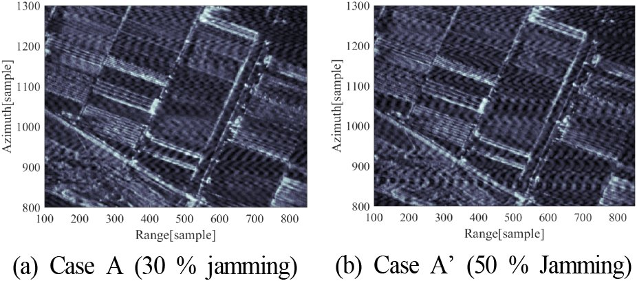

연구 과제
위성 SAR ECM/ECCM 기술 연구

주요 내용·성과
- RPCR 저피탐 레이다 파형 제안 — 랜덤 신호의 위상 성분만 적용해 SNR 손실을 방지하고 부호율 천이로 APCN 대비 도플러 특성 개선; Wigner-Hough 변환으로 파형의 피탐 취약성 분석 (한국전자파학회논문지 26(11), 2015, pp. 999–1011)
- SAR ECCM용 파형 다양성 기법 — 상호 상관이 낮고 도플러 천이에 강건한 다중 위상부호 파형 생성, 기만 재밍 대응 모의 (EuMW 2016 발표; International Journal of Microwave and Wireless Technologies 9(6), 2017, pp. 1345–1354, DOI 10.1017/S1759078717000678)
- 2015 논문 사사 원문: "이 연구는 방위사업청에서 설립한 전자전특화센터(EWRC)의 지원으로 수행되었음."
관련 논문·발표
- 도플러 특성 개선을 위한 랜덤 위상 및 부호율 천이 기반 저피탐 레이다 파형 (2015)
- Waveform diversity for SAR ECCM based on random phase and code rate transition (EuMW 2016 / IJMWT 2017)
- L-대역 SAR 영상에서의 간섭신호 영향 분석 (2012)
출처
- koreascience.kr / article/JAKO201511639884027.pdf
- kci.go.kr / kciportal/ci/sereArticleSearch/ciSereArtiView.…
- cambridge.org / core/journals/international-journal-of-microwa…
- koreascience.kr / article/JAKO201205759628727.pdf
- 구 연구실 홈페이지 / 연구실-수행-과제
- 구 연구실 홈페이지 / services/차세대-sar-국방-특화실
- ntis.go.kr / ThSearchProjectList.do